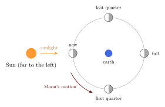
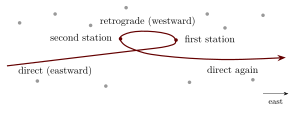

Chapter 2: The Sky the Astronomers Saw¶
2.1 Why Begin with the Sky¶
Indian astronomers, like all astronomers before the telescope, worked with what can be seen with the naked eye and measured with simple instruments. To understand what they achieved, and what their models were designed to explain, it helps to know what the sky actually does. This chapter describes, in modern terms but without technical apparatus, the phenomena that the rest of the volume refers to: the daily turning of the sky, the Sun’s yearly path, the Moon’s phases and its wandering path, the motions of the planets, eclipses, and the slow precession of the equinoxes. Readers familiar with elementary astronomy may pass directly to Chapter 3.
2.2 The Daily Turning of the Sky¶
Watched for a few hours on a clear night, the whole sky turns slowly from east to west around a point in the north, the celestial pole. Stars near the pole circle it without setting; stars farther away rise in the east, cross the sky and set in the west. The height of the pole above the northern horizon equals the observer’s latitude: about \(8^\circ\) at Kanyakumari, \(23^\circ\) at Ujjain, \(28^\circ\) at Delhi, \(34^\circ\) at Srinagar. At the equator the pole lies on the horizon and every star is above the horizon for half of each day. Polaris, the present “pole star”, a star of only moderate brightness, lies less than a degree from the pole; its closeness to the pole is a recent consequence of precession (Section 2.9).
The modern explanation is that the earth rotates on its axis once in about 23 hours 56 minutes (a sidereal day). Āryabhaṭa held this view (Chapter 9); most Indian astronomers, like most Greek and Islamic astronomers, preferred to say that the starry sphere turns around a stationary earth. For the purposes of computation the two descriptions are equivalent.
The circle on the sky directly above the earth’s equator is the celestial equator. A star’s angular distance north or south of it is its declination; its position around the sky, measured along the equator, is its right ascension. The Indian texts work with these equatorial coordinates as well as with coordinates measured along the ecliptic and with the horizon coordinates of altitude and azimuth (Chapter 6).
2.3 The Sun’s Yearly Path¶
2.3.1 The ecliptic and the seasons¶
Against the background of the stars, the Sun moves eastward by about one degree a day, completing a circuit in a year. Its path, the ecliptic, is a great circle inclined to the celestial equator by about \(23\tfrac{1}{2}^\circ\) (the obliquity of the ecliptic). The Sun crosses the equator northward at the vernal equinox (about 20 March), reaches its greatest northern declination at the summer solstice (about 21 June), crosses the equator southward at the autumnal equinox (about 22 September) and reaches its greatest southern declination at the winter solstice (about 21 December). In Indian terms, the half-year from the winter to the summer solstice is uttarāyaṇa, the Sun’s “northern course”, and the other half dakṣiṇāyana.
As the Sun’s declination changes, so do the point of the horizon at which it rises, its height at noon, and the length of daylight. At the equinoxes the Sun rises due east and day and night are nearly equal everywhere. In northern India in June, the Sun rises well north of east and daylight lasts about 14 hours; in December it rises south of east and daylight lasts about 10 hours. The ratio of the longest to the shortest day increases with latitude; it is about 3:2 at a latitude of \(35^\circ\), which is one reason why the 3:2 ratio of the Vedāṅga Jyotiṣa has been discussed so much (Chapter 3).
2.3.2 The Sun’s unequal motion¶
The Sun’s motion along the ecliptic is not uniform. Because the earth’s orbit is slightly elliptical, the Sun appears to move fastest in early January and slowest in early July, and the seasons are of unequal length: in the northern hemisphere the half-year from the spring to the autumn equinox is about a week longer than the other half. The difference between the Sun’s actual position and the position it would have if it moved uniformly is the “equation of centre”; it never exceeds about two degrees. The siddhāntas represent it with the manda correction (Chapter 7).
2.3.3 Shadows¶
The simplest way to follow the Sun is to watch the shadow of a vertical stick, a gnomon. The shadow is shortest at noon, when it points due north (in most of India, for most of the year), and its noon length changes through the year with the Sun’s height. At the equinoxes the noon shadow of a gnomon of height \(h\) has length \(h\tan\phi\), where \(\phi\) is the latitude, which is how the siddhāntas find the latitude (Chapter 6). In the tropics, south of the Tropic of Cancer, the Sun stands directly overhead at noon on two days a year, and the gnomon then casts no shadow at all.
2.4 Two Kinds of Year¶
The year can be measured in two ways. The tropical year, from one vernal equinox to the next, governs the seasons; it lasts about 365.2422 days. The sidereal year, the time the Sun takes to return to the same position among the stars, lasts about 365.2564 days, some twenty minutes longer. The difference arises because the equinoxes themselves slide slowly westward among the stars (Section 2.9). The Gregorian calendar follows the tropical year. The Indian siddhāntas defined the year sidereally, by the Sun’s return to the beginning of Aśvinī; as a result the Indian solar months have drifted, over the centuries, against the seasons (Chapter 13).
2.5 The Moon¶
2.5.1 Phases and months¶
The Moon moves eastward among the stars about thirteen times faster than the Sun, some \(13^\circ\) a day, and so overtakes the Sun about once a month. When it is in the same direction as the Sun it cannot be seen (new moon, amāvāsyā); a day or two later it appears as a thin crescent in the evening sky; a week after new moon it is half lit (first quarter); a fortnight after new moon it is opposite the Sun and fully lit (full moon, pūrṇimā); and then it wanes through last quarter to the next new moon. The interval from one new moon to the next, the synodic month, averages about 29.53 days. The time the Moon takes to return to the same star, the sidereal month, is shorter, about 27.32 days, because in the meantime the Sun has moved on.

The Indian lunar day, the tithi, is defined by the Moon’s elongation from the Sun: each tithi corresponds to \(12^\circ\) of elongation, so that there are thirty in a synodic month (Chapter 13).
2.5.2 The new crescent¶
The first visibility of the new crescent after conjunction depends on how far the Moon is from the Sun, how high it stands above the horizon after sunset, the season, the observer’s latitude and the clarity of the air. Usually the crescent is first seen one or two evenings after conjunction; under poor conditions it may not be seen until later. Calendars that begin the month with the observed crescent, such as the Islamic calendar in its religious use, therefore cannot be fixed exactly in advance, whereas the Indian calendar, which defines its months by the computed conjunction or opposition, can. The siddhāntas nevertheless treat crescent visibility, in their chapters on the “elevation of the horns” of the Moon (Chapter 6).
2.5.3 The Moon’s irregularities¶
The Moon’s motion is far from uniform. Its orbit is noticeably elliptical, so that its speed varies between about \(12^\circ\) and \(15^\circ\) a day over the anomalistic month of about 27.55 days, from one perigee (closest approach) to the next; the point of perigee itself moves slowly eastward, completing a circuit in about 8.85 years. The Sun’s attraction causes further irregularities, the largest of which (the evection) displaces the Moon by up to about \(1\tfrac{1}{4}^\circ\). Ancient astronomers could model the first irregularity well; the others required later refinements (Chapter 7).
2.5.4 The Moon’s path and its nodes¶
The Moon’s path is inclined to the ecliptic by about \(5^\circ\). It crosses the ecliptic at two points, the nodes, which slide slowly westward around the ecliptic, completing a circuit in about 18.6 years. The Moon is therefore usually a few degrees north or south of the ecliptic, and it can pass close to, or in front of (occult), stars and planets near the ecliptic. The two nodes are the Rāhu and Ketu of Indian astronomy (Chapter 8).
2.6 Eclipses¶
A lunar eclipse occurs when the full moon passes through the earth’s shadow, and a solar eclipse when the new moon passes in front of the Sun. Because the Moon’s path is inclined to the ecliptic, this happens only when a full or new moon falls close to one of the nodes, so eclipses come in “seasons” about six months apart, when the Sun is near a node. A lunar eclipse is visible from the whole half of the earth where the Moon is above the horizon, and lasts up to a few hours; a total lunar eclipse turns the Moon a dull red rather than making it disappear. A solar eclipse is visible only from a limited part of the earth, and totality, where it occurs, lasts at most a few minutes along a narrow track. This difference is why lunar eclipses were predicted earlier and more successfully than solar ones, which require the computation of parallax for the observer’s position (Chapter 8).
Observing the Sun
Never look directly at the Sun, with or without binoculars or a telescope, including during a partial or annular solar eclipse: permanent damage to the eye can result. Use certified solar viewing filters or a simple pinhole projection. Lunar eclipses are entirely safe to watch with the naked eye.
2.7 The Planets¶
2.7.1 The five visible planets¶
Five planets are visible to the naked eye: Mercury, Venus, Mars, Jupiter and Saturn. Like the Sun and Moon, they move generally eastward among the stars, close to the ecliptic, but each in its own way. Saturn takes about 29.5 years to go round the zodiac, Jupiter about 12 years and Mars about 1.9 years. Mercury and Venus never stray far from the Sun: Mercury is seen only low in the twilight, never more than about \(28^\circ\) from the Sun, and Venus, the brightest of the planets, never more than about \(47^\circ\), appearing for months at a time as the “evening star” or the “morning star”.
2.7.2 The planets’ names¶
Several Sanskrit names of the planets describe how they look or move. Mars is Aṅgāraka, “the glowing coal”, or Lohitāṅga, “red-bodied”, from its reddish colour, which is plain to the naked eye. Saturn is Śanaiścara, “the slow mover”, the slowest of the visible planets. Venus, the brightest object in the sky after the Sun and Moon, is Śukra, “the bright”. Mercury is Budha, “the wise” (in myth the son of the Moon), and Jupiter is Bṛhaspati or Guru, the preceptor of the gods. Rāhu and Ketu, which cannot be seen at all, entered the list of “planets” (grahas) through astrology and the eclipse myth (Chapter 8). The Sun and Moon were counted among the grahas too, which is why there are seven planets of the week and nine of astrology.
2.7.3 Retrograde motion¶
From time to time each planet slows down, stops, moves westward for a while among the stars, stops again and resumes its eastward motion. For the superior planets (Mars, Jupiter and Saturn) this retrograde motion happens around the time when the planet is opposite the Sun in the sky, which is also when it is brightest; for Mercury and Venus it happens around the time when they pass between the earth and the Sun. Mars retrogrades for about two and a half months, through about \(15^\circ\); Jupiter for about four months, through about \(10^\circ\); Saturn for about four and a half months, through about \(7^\circ\).

The modern explanation is that the earth and the planets all move around the Sun, and the retrograde motion is an effect of viewing a planet from a moving earth: the earth, moving faster on its smaller orbit, overtakes a superior planet, which then appears to move backwards; an inferior planet moving faster on its smaller orbit overtakes the earth. Ancient astronomers, Indian, Greek and Islamic, reproduced the same appearances by placing the planet on an epicycle, a circle carried around the earth; in Indian astronomy this is the śīghra epicycle (Chapter 7).
2.7.4 Synodic and sidereal periods¶
Two kinds of period are therefore needed to describe a planet’s motion. The sidereal period is the time it takes to go once round the zodiac, as seen from the Sun. The synodic period is the time between successive repetitions of the same configuration with the Sun, for example from one opposition to the next; it governs the cycle of visibility, invisibility and retrograde motion. For Mars the synodic period is about 780 days, for Jupiter about 399 days, for Saturn about 378 days, for Venus about 584 days and for Mercury about 116 days.
2.8 The Fixed Stars¶
Most of the bright stars along the zodiac were used by Indian astronomers as junction stars of the nakṣatras (Chapter 4): Aldebaran (Rohiṇī), Regulus (Maghā), Spica (Citrā), Antares (Jyeṣṭhā) and others. Each star rises about four minutes earlier every day, so that over the year the whole zodiac passes through the night sky. A star that has been invisible in the Sun’s glare first reappears in the eastern sky just before dawn; this “heliacal rising” was used in many cultures to mark the seasons, and the siddhāntas computed it for the planets and for certain stars (Chapter 7). Canopus (Agastya), the second brightest star of the night sky, is visible from India low in the south; its heliacal rising was traditionally associated with the end of the rains, and Varāhamihira devotes a chapter of the Bṛhatsaṃhitā to it.
2.9 Precession¶
Over long periods the whole frame of the equator and the poles shifts slowly with respect to the stars. The earth’s axis traces a cone in about 25,800 years, so that the celestial pole moves in a circle among the stars and the equinoxes slide westward along the ecliptic by about \(50”\) a year, one degree in about 72 years. This is the precession of the equinoxes. Its effects are slow but cumulative: in about two thousand years the equinoxes have moved by nearly thirty degrees, about a whole sign of the zodiac. It is the reason why the tropical and sidereal zodiacs now differ by about twenty-four degrees (Chapter 4), why the solstices no longer fall in the nakṣatras mentioned in the Vedāṅga Jyotiṣa (Chapter 3), and why Indian solar festivals have drifted against the seasons (Chapter 13). Indian astronomers knew of the motion of the solstices and treated it in different ways (Chapter 6).
2.10 What Naked-Eye Astronomy Can Achieve¶
With careful observation and simple instruments, naked-eye astronomers can measure positions in the sky to a few minutes of arc and times to a minute or so. Mean motions, however, can be determined far more precisely than single positions, because an error of a few minutes of arc is spread over all the cycles completed between two observations: a period measured over centuries is far more precise than one measured over a single cycle. This is why the mean periods of ancient astronomy were often excellent, while the predicted positions of the planets at a given moment, which depend on the models of their irregularities, were much less so. The chapters that follow should be read with this in mind: the achievements of Indian astronomy lie both in the accuracy of its long-period parameters and in the ingenuity of its models, and its limitations are those of all astronomy before the telescope.
Further Reading¶
Neugebauer (1975) explains the phenomena that ancient astronomy had to model; Plofker (2009) relates them to the Indian texts; Montelle (2011) treats eclipses in detail.